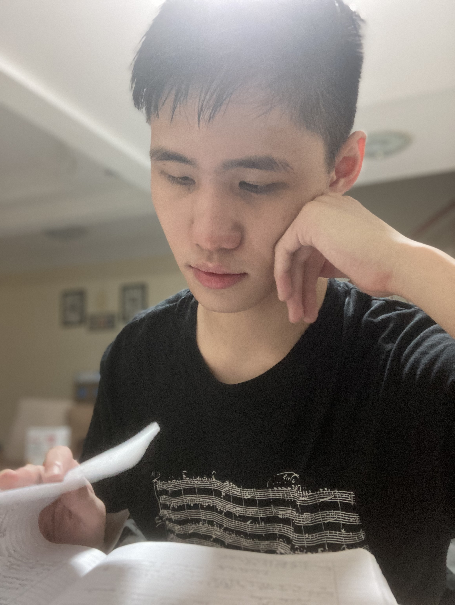

Ryan Tay
About
I am a recent BSc Mathematics graduate from the University of Warwick.
This page is intended to give a bare-bones view of what I have done during my time on this planet.
You can contact me by sending an email to any of the following email addresses:
- [first].[last]@mail.com
- [first].[last]@warwick.ac.uk
My preferred pronouns are he/him/his.
I frequently lurk, and occasionally post, on several social medias and online forums, including LinkedIn, Mathematics Stack Exchange, and Twitter / X.
Education
October 2024 – June 2025
MASt Pure Mathematics, University of Cambridge, United Kingdom.
September 2021 – June 2024
BSc Mathematics, University of Warwick, United Kingdom.
Grade: First Class Honours
July 2019 – December 2020
A-Levels, Methodist College Kuala Lumpur, Malaysia.
Grades: A*A*A*A*
Professional Experience
June 2024 – September 2024
Undergraduate Researcher, Warwick Mathematics Institute, United Kingdom.
Supervised by Dr Josephine Evans and Professor Oleg Pikhurko. Funded by the University of Warwick's Undergraduate Research Support Scheme.
July 2023 – September 2023
Data Analytics Intern, Avinity Analytics Sdn Bhd, Malaysia.
August 2022 – September 2022
Data Analytics Intern, Avinity Analytics Sdn Bhd, Malaysia.
Volunteering Experience
July 2024
Sorter, Warwick Donation Drive, United Kingdom.
August 2019 – September 2019
Student Volunteer, Malaysian Association for the Blind, Malaysia.
Expository Works
-
Cichoń's diagram and the rearrangement number, written for the MA395 Essay module as part of my BSc Mathematics degree at the University of Warwick.
Supervised by Dr Adam Epstein and Dr András Máthé.
(April 2024) [PDF] -
Contour integration.
Co-authored with Aris Mercier.
(March 2024) [PDF] -
Ordinal numbers, written for the MA213 Second Year Essay module as part of my BSc Mathematics degree at the University of Warwick.
Supervised by Dr David Wood.
(April 2023) [PDF]
Talks and Short Lectures
-
The Cantor space and the Baire space, presentation for the MA395 Essay module as part of my BSc Mathematics degree at the University of Warwick.
(May 2024) [Personal Handwritten Notes] -
Contour integration, MA270 Analysis 3 revision lecture, Warwick Maths Society, University of Warwick.
Co-lectured with Aris Mercier.
(March 2024) [Handout]